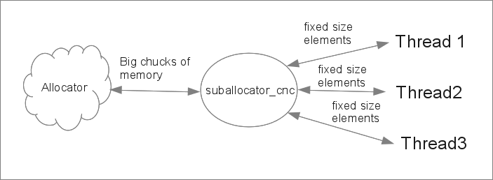

The [ Counter Tree + Suballocator ] Library
Francisco Jose Tapia Copyright ©
2010-2013 Francisco Jose Tapia
4.-
Suballocators
4.1.-
Problems with allocators in Windows and Linux
The allocator is the data structure defined in the STL, which is the
interface between the data structures and the memory provided generally
by the Operating System. The allocators have a well defined interface.
The data structures don't need to know anything about the allocator
except the interface. The allocator manages the memory received from the
Operating System, and the memory requested in the allocate operations
and the memory returned in the deallocate operations.
The structure of an allocator is :
The allocator manage the requests from the data structure, and the
request to the Operating System. If you need a specific allocator ( for
example if you use shared memory .. ), the management of the elements
is included in the allocator.
Working with allocators we have several problems related
a) THE SPEED
To write an allocator for to manage a
wide range of size elements and a big number of elements (several
millions) of each size in a fast way, it's a very difficult task. When
the number of elements grows, many allocators begin to have speed
problems.
A very hard test for the allocators are the data structures which
need a very high number of elements of the same size, like the STL
data structures list, set, multiset, map or multimap.
Some years ago, only supercomputers have 4 GB of memory. Now, the
cheap laptop have 6 GB, and is expected the memory of the computers
grow Many allocators of modern compilers are not prepared for to
manage hundred of millions of elements. With a small number of
elements they are efficient, but when have a great number the speed
down, and appear problems with the memory management. It is a
challenge for the HW designers and mainly for the SW designers
b) MEMORY USED BY THE ALLOCATOR, MEMORY
CONSUMPTION BY THE PROGRAM
For to improve the speed allocating the
small size elements, many allocators request to the Operating System
big chucks of memory. With this, the allocator don't need request
memory to the operating system for each allocation. These allocators
are named pool allocators.
Many pool allocators don't return well
the unused chucks of memory to the Operating System and the memory
used by the allocator is the maximum used, never decrease . If you
have a small number of elements, you have a small problem, small
resources and small time operations. But, if you have several millions
of elements allocated, perhaps you are using several GB of memory.
Running a program with GB of unused memory, because the allocator
don't return the memory request, is a great waste of resources.
This problem is specially important in two environments :
- When you have a limited resources, as occurs in the mobile
phones, pads , tablets...
- When the programs must run continuously in a multitask
environment
The std::allocator of GCC 4.7 and CLANG 3.3, don't return the memory
to the Operating System with the allocation of several millions of
small and fixed size elements. The std::allocator of Visual Studio 10,
return the memory to the Operating System, but is slower than the
allocator of GCC 4.7 and CLANG 3.0
If you use an additional allocator for to improve the speed of the
small fixed size elements, this improve the speed, but increase the
memory consumption, which is the sum of the maximum memory of the pool
allocator and the memory used by the allocator. If the pool allocator
don't free the unused memory, this memory can't be reused by the
allocator.
Other additional problem is the information around the memory
allocate. Many allocators, when you request memory for to allocate an
element. The allocator return you a pointer to a memory for the
element , but around that memory you have additional information used
by the allocator, for to deallocate that memory. By example, allocate
50.000.000 elements of 64 bits, the std::allocator of GCC 4.7 use 1.56
Gigas of memory and the boost::fast_pool_allocator 0.52 Gigas
c) THE CACHE PERFORMANCE
The last problem associated to the
allocators is the cache performance. When you have a big data
structure (imagine a std::set with 50.000.000 elements), travel the
structure for to find an element or for to insert an element, you must
cross though many nodes. Calculate the hit rate of the cache is
extremely difficult. But some measures can provide us a very useful
information.
Take in mind, that the performance can have great variations,
depending of the processor, and mainly of the cache size. On my
computer in the allocation of 50.000.000 elements of 64 bits, on Linux
64 bits
| NAME |
Time Spent |
Time of individual allocation |
| std::allocator |
1.44 seconds |
28.8 nanoseconds |
| std::allocator+suballocator |
0.76 seconds |
15.2 nanoseconds |
If we check the time with the std::set and different allocators in the
insertion of 30.000.000 random elements of 64 bits (In the two test
insert the same sequence of numbers)
| NAME |
Time Spent |
Time of individual insertion |
| std::allocator |
69.78 seconds |
2326 nanoseconds |
| std::allocator+suballocator |
39.65 seconds |
1321 nanoseconds |
The time difference between the allocation and insertion of one
element in a std::set with the two allocators is 1005 nanoseconds.
The time difference between the two allocator is 13.6 nanoseconds.
1005 - 13.6 = 991.4 nanoseconds
What is the reason of this difference of 991.4 nanoseconds ? The
response is the cache performance due to the data locality
improvement.
4.2.-
Description of the Suballocators
The suballocator born with the idea of correct these problems. But, what
is a suballocator ? The suballocator is a layer over the allocator. It
manage in very fast way a greater number (hundred millions) of fixed
size elements.
The suballocator receives an allocator as template parameter. When the
suballocator needs memory, request memory from the allocator, and when
the memory is not used, is returned to the allocator. The suballocator
present the same interface than the STL allocator. Form the view point
of the data structures, the suballocator is other allocator.
You can use the suballocator with all the allocations, but you must know
that when the number of elements requested to the allocator is greater
than 1, the memory is obtained directly from the allocator, not from the
static pool.

The suballocator is a pool allocator with
two
important characteristics :
a) Always
provide the first element free. This strategy improves the
compactation of the area used for to allocate the elements. This
improve the cache performance and the speed of the data structures.
b) The suballocator have a
aggressive strategy in order to free and deallocate from the
allocator the last chunk obtained. With each element
deallocated , the suballocator check it. This simple memory schema
permit to the allocators return memory to the Operating System and
decrease the memory used by the program, as can see in the benchmarks
The results obtained in the benchmarks confirm the theory described
here. These result depend in a very important part of the cache size. In
a QuadCore with 6M of cache, the suballocator is 3 times faster than the
GCC 4.7 std::allocator, and in a AMD Athlon with 1 M of cache only 1.5
times faster)
With the suballocator
a) We have a very fast allocation
( around 2 times
faster than the std::allocator of GCC
4.7, CLANG
3.0 and Visual Studio 10 *See details in the Suballocator
Benchmark )
b) Return memory to the allocator, for to be used by others
types of data. Many allocators, return this memory to the
Operating System, and decrease the memory used by the
program, (
as you can see in the Suballocator
Benchmark )
c) You can use with any allocator if it is according with
the STL definition. The suballocator provides speed and
memory management to any allocator
d) The suballocator always provide the first position free. With this
we obtain a very compact data areas, which improve the cache
performance ( 35% of
the time saved in the insertion in a std::set. See details in the
second graph in Benchmarks)
The next step is the join of the two previous concepts. The idea is to
integrate the suballocator inside the data structure. The STL vector
have a management of the memory used by itself. This is the same idea
applied to the data structures. I had done with the countertree data
structures : vector_tree, set , map , multiset and multimap, but it is
trivial to do with any other data structure.with fixed size elements.
The results are data structures, defined in the countertree namespace
with the suffix pool (
vector_tree_pool,
set_pool, multiset_pool, map_pool, multimap_pool) . They have
identical interface than the STL structures with the same name with the
suffix pool, but with an internal suballocator , which increase the
speed of the data structure.

The suballocator permit to do the splice and merge operations of the
std::list, and for move elements from one data structure to other as
need with the rvalues. This permit to the iterators to the elements
remain valid after these operations. They pointed to the same element,
but in different data structure.
The suballocator support the void elements
countertree::suballocator
< std::allocator <void> >
CONCURRENT VERSION
We have two classes of suballocators, the suballocators for to work only
with 1 thread , and the suballocator_cnc with thread-safe mechanism for
to work with several threads
Suballocator
: This class create a suballocator in each thread from where
allocate the memory for the elements of these thread only. Each thread
have its own suballocator. It is not thread safe because only is
accessed by 1 thread
 Suballocator_cnc
Suballocator_cnc
: This class create a static global pool from where allocate memory
for all the threads. The code of this class is thread safe, and can be
accessed simultaneously by several threads

FUNCTIONAL DESCRIPTION
The idea is simple, the suballocator is a template class which receives
an allocator as template parameter. This allocator provide memory to the
suballocator and deallocate when is freed from the suballocator. The
suballocator receive memory from an allocator, and improve their
performance : speed, size, memory control and cache performance.
The suballocator can work with any allocator.
Internally there are four classes : suballocator32, suballocator32_cnc,
suballocator64 and suballocator64_cnc. The four classes can run in 32
and 64 bits environment. In a 32 bits environment, the suballocator64 is
slower than suballocator32. In a 64 bits environment suballocator64 is
slightly faster than suballocator32.
The suballocator and suballocator_cnc are alias template. A small
metaprograming function detect if the environment is 32 bits or 64 bits
and select the alias template most adecuate to the environment. By
example: with a 32 bits compiler suballocator is an alias template of
suballocator32, but with a 64 bits compiler is an alias template of
suballocator64.
I highly recommend to use suballocator and suballocator_cnc, its simple
and provide compatibility between the 32 and 64 bits environment, but
you can use in a simply and safe mode the others.
The class suballocator receives an allocator as template parameter. You
need to include the file boost/countertree/suballocator.hpp. The classes
are defined in the namespace countertree .The interface of
suballocator32, suballocator64 and suballocator are identical to the
definition of the class allocator in the STL. It is so simple as appear.
#include <boost/countertree/suballocator.hpp>
countertree::suballocator < std::allocator<double> >A ;
countertree::suballocator_cnc< std::allocator<double> >A_cnc ;
countertree::suballocator32 < std::allocator<double> >B ;
countertree::suballocator32_cnc< std::allocator<double> >B_cnc ;
countertree::suballocator64 < std::allocator<double> >C ;
countertree::suballocator64_cnc< std::allocator<double> >C_cnc ;
The suballocators run well with any number of element allocated, but
when show all the power is when the number of element up to several
millions
The internal algorithms and data structures are described in the
document
The_suballocator_algorithms.pdf.


 Boost
C++ Libraries
Boost
C++ Libraries